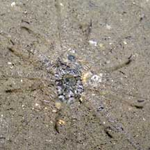
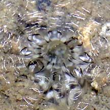
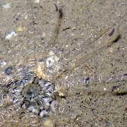
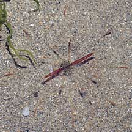
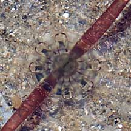
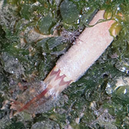

|
|
| sea anemones text index | photo index |
| Phylum Cnidaria > Class Anthozoa > Subclass Zoantharia/Hexacorallia > Order Actiniaria |
| Transparent
spoke anemone awaiting identification* updated Nov 2019 Where seen? This transparent anemone is sometimes seen on our shores, on silty sandy shores, such as inside sheltered swimming lagoons. It is shy and retracts rapidly into the sand when alarmed. Features: Tentacles few (about 16) held straight and flat against the ground, resembling spokes of a wheel. One ring of shorter tentacles (about 2cm diameter) and another ring much longer (about 3-5cm diameter). Each transparent tentacle (both long and short ones) with fine white bars and a dark tip. Oral disk tiny (about 1.5cm in diameter) with fine dark and white radiating stripes. A pair of tentacles opposite one another may be dark, especially at the oral disk. Body column smooth. |
|
 Pulau Hantu, May 05 |
 |
 |
|
 Changi, Jul 08 |
 |
 Pulau Sekudu, Jun 14 |
*Species are difficult to positively identify without close examination.
On this website, they are grouped by external features for convenience of display.
| Transparent spoke anemones on Singapore shores |
On wildsingapore
flickr
|
| Other sightings on Singapore shores |